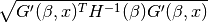

satlas.stats.fitting.create_band¶
-
satlas.stats.fitting.create_band(f, x, x_data, y_data, yerr, xerr=None, method='chisquare', func_chi=None, func_llh=<function poisson_llh at 0x0000000008DF2D08>, kind='prediction')[source]¶ Calculates prediction or confidence bounds at the 1
 level.
The method used is based on the Delta Method: at the requested prediction points x, the bound is calculated as
level.
The method used is based on the Delta Method: at the requested prediction points x, the bound is calculated as
with G the cost function, H the Hessian matrix and
 the vector of parameters.
The resulting bound needs to be subtracted and added to the value given by the model to get the confidence interval.
the vector of parameters.
The resulting bound needs to be subtracted and added to the value given by the model to get the confidence interval.For a prediction interval, the value before taking the square root is increased by 1
Parameters: - f (
BaseModel) – Model for which the bound needs to be calculated. - x (array_like) – Selection of values for which a prediction needs to be made.
- x_data (array_like) – Experimental data for the x-axis.
- y_data (array_like) – Experimental data for the y-axis.
- yerr (array_like) – Experimental uncertainty for the y-axis.
- xerr (array_like) – Experimental uncertainty for the x-axis. Defaults to None.
- method ({'mle', 'chisquare'}) – Selected method for which the cost function is selected.
- func_chi (function, optional) – Is passed on to the chisquare methods in order to calculate the experimental uncertainty from the modelvalue. Defaults to None, which uses yerr.
- func_llh (function) – Is passed on to the likelihood fitting method to define the
likelihood function. Defaults to
satlas.loglikelihood.poisson_llh. - kind ({'prediction', 'confidence'}) – Selects which type of bound is calculated.
Returns: bound – Array describing the deviation from the model value as can be expected for the selected parameters at the 1:math:sigma level.
Return type: array_like
- f (